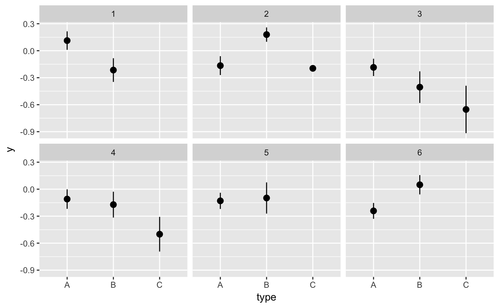
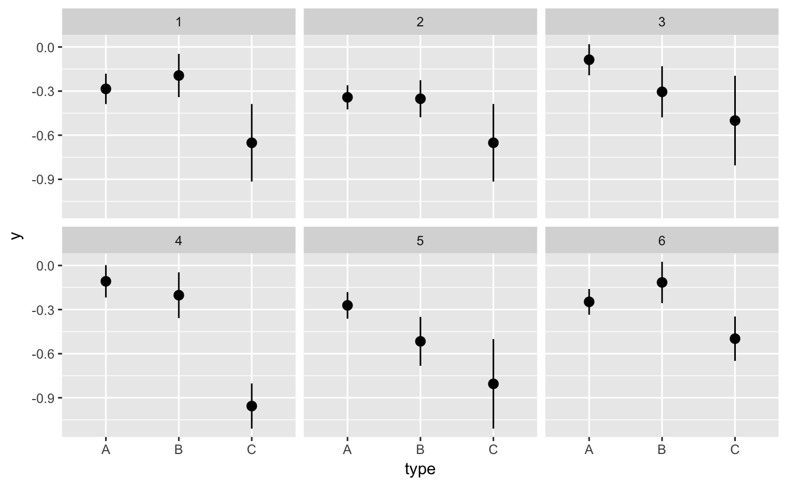

Create a bootstrapper function useful for repeated reproducible bootstrapping
Source:R/bootstrapper.R
bootstrapper.RdCreate a bootstrapper function useful for repeated reproducible bootstrapping
bootstrapper(times, group = NULL, seed = NULL, key = ".draw", row = ".row", id = ".id", original_id = ".original_id", copies = ".copies")
Arguments
| times | Number of independent bootstrap draws to perform. |
|---|---|
| group | An optional expression setting up the grouping to use for bootstrapping. If not provided, any grouping present in the original dataset will be used. |
| seed | Random seed to use. |
| key | Name (as character) of the column that will hold an integer
running from 1 to |
| row | Name (as character) of the column that will hold an integer counting rows in the final bootstrapped dataset. Useful for animations with gganimate. |
| id | Name (as character) of the column that will hold an integer running from 1 to n for each bootstrap, where n is the number of observations in each group. |
| original_id | Name (as character) of the column that indicates the row from which the bootstrapped row originates. |
| copies | Name (as character) of the column that reports how often a specific original row has been oversampled. |
See also
Examples
#> # A tibble: 12 x 6 #> # Groups: .draw [3] #> .draw .id .original_id letter .copies .row #> <int> <int> <int> <fct> <dbl> <int> #> 1 1 1 3 c 2 1 #> 2 1 2 3 c 2 2 #> 3 1 3 1 a 1 3 #> 4 1 4 2 b 1 4 #> 5 2 1 1 a 4 5 #> 6 2 2 1 a 4 6 #> 7 2 3 1 a 4 7 #> 8 2 4 1 a 4 8 #> 9 3 1 3 c 2 9 #> 10 3 2 2 b 2 10 #> 11 3 3 2 b 2 11 #> 12 3 4 3 c 2 12#> #>#> #> #>#> #> #>#> #> #>ggplot(iris, aes(Sepal.Length, Sepal.Width)) + geom_point() + geom_smooth(data = bootstrapper(5, Species), aes(group = .draw), se = FALSE) + facet_wrap(~Species)#># it is important to set grouping correctly for bootstrapping set.seed(1234) df <- data.frame( type = c(rep("A", 100), rep("B", 10), rep("C", 3)), y = rnorm(113) ) # incorrect: bootstrapping ungrouped dataset leads to missing category C ggplot(df, aes(type, y)) + geom_pointrange(data = bootstrapper(6, seed = 562), stat = "summary") + facet_wrap(~.draw)#>#>#>#>#>#>#> Warning: Removed 1 rows containing missing values (geom_pointrange).# correct: bootstrapping within groups ggplot(df, aes(type, y)) + geom_pointrange(data = bootstrapper(6, type, seed = 562), stat = "summary") + facet_wrap(~.draw)#>#>#>#>#>#># also correct: use grouped data frame ggplot(group_by(df, type), aes(type, y)) + geom_pointrange(data = bootstrapper(6, seed = 562), stat = "summary") + facet_wrap(~.draw)#>#>#>#>#>#># NOT RUN { library(gganimate) set.seed(69527) x <- rnorm(15) data <- data.frame( x, y = x + 0.5*rnorm(15) ) bs <- bootstrapper(9) p <- ggplot(data, aes(x, y)) + geom_point(shape = 21, size = 6, fill = "white") + geom_text(label = "0", hjust = 0.5, vjust = 0.5, size = 10/.pt) + geom_point(data = bs, aes(group = .row), shape = 21, size = 6, fill = "blue") + geom_text( data = bs, aes(label = .copies, group = .row), hjust = 0.5, vjust = 0.5, size = 10/.pt, color = "white" ) + geom_smooth(data = bs, method = "lm", se = FALSE) + ggtitle("Bootstrap demonstration") + theme_bw() p + facet_wrap(~.draw) p + transition_states(.draw, 1, 1) + enter_fade() + exit_fade() # }